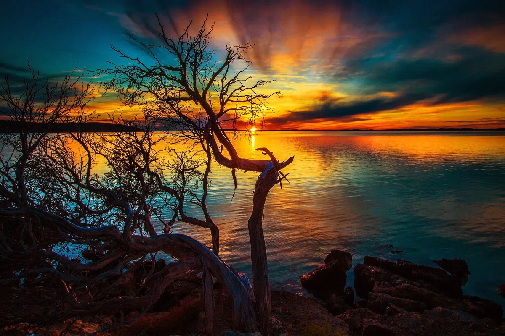
Sunset. Sunsets are reliably beautiful subjects and backgrounds for photography. Even when they’re not colorful and
majestic, they still create a lovely change in lighting, which can make boring scenes look suddenly magical.
But sunsets can also be frustrating, especially for beginners. When a sunset is particularly gorgeous, you
can feel discouraged trying to capture its full beauty in an image. Below are some tips and inspiration to
help you tackle this problem and improve your sunset photography.
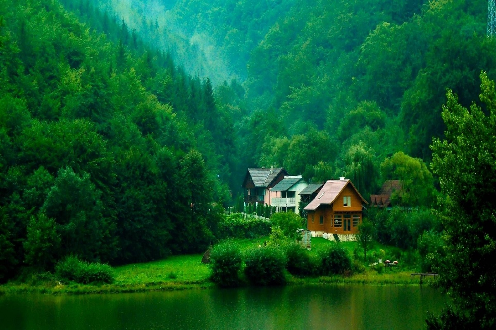
Green Forest. In the forest I breathe in every way that it is possible to expand: in lungs, in brain in soul. In the forest
there is a sense of kinship with the flora, of an ancient soul that stretches into everything that lives. It
is here under the nascent rays of a sun born to rise each day that I am so very alive. How could I not love
the forest so? From simple seed, with mud, water and sun, comes all this, these towering gentle giants that
are so anchoring to all that I am.
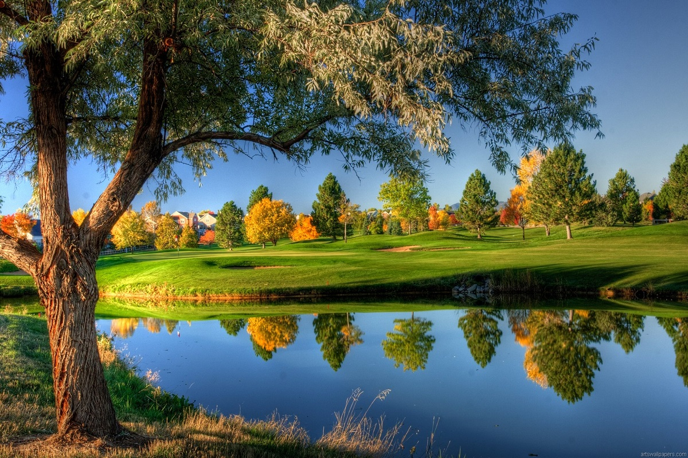
Lake. The lake lay silver in the bright light of the noon sun, not a perfect ovoid like a looking glass of old, but
irregular like an ink-splat on aging concrete. The rippled water ran right into the crevices, washing the soil
from the rocks. Around the edges were pines, chaotic in their spacing but never more than a few feet without
a tree. The only sound was the soft whispering of the trees and Ryan's legs splashing as he pulled the kayak
into the cool water at the northern bank. To the southern side it looked an easy journey in a couple of hours,
but he knew better than most that the headwind would add on at least another hour and
tire him more than paddling double the distance on a still day.
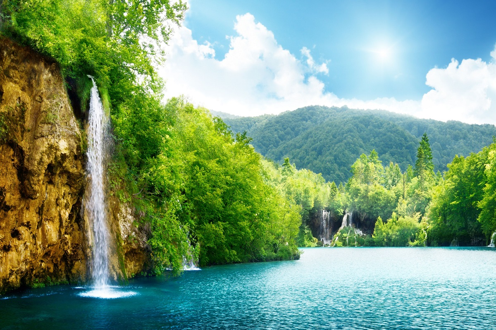
Summer Sun. The ground swerved into the narrow valley that was almost a gorge , it ran for around ten miles before sloping
back up. From here we could see herds of cattle swarming through the narrow corridor of the valley and small
shrubs growing on the sides. The forest had been the heart of this world but now we were in the soul. This was
our freedom.
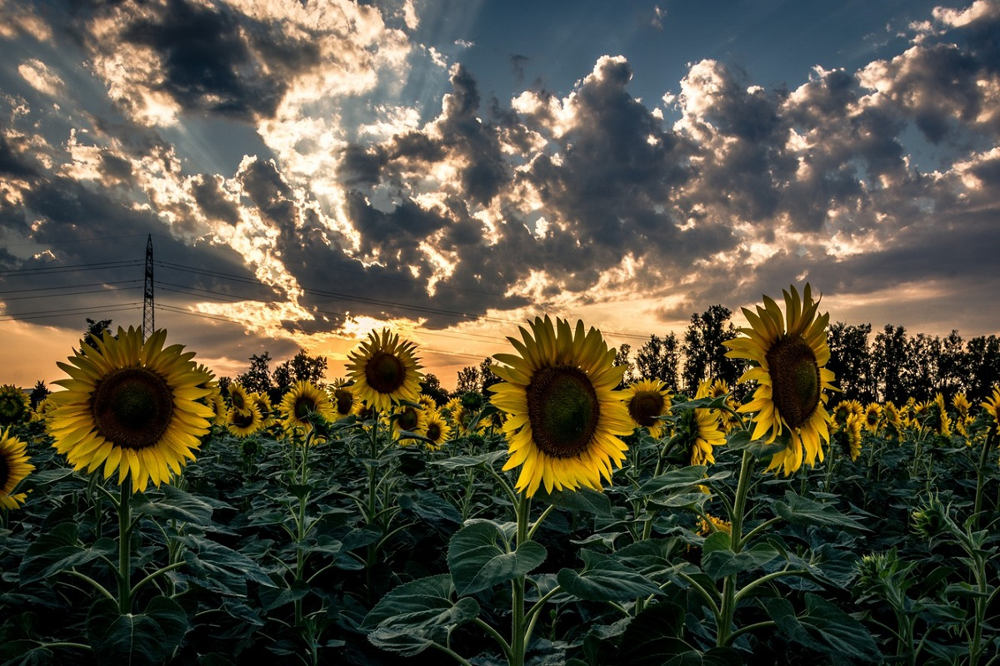
Sunflowers. They are bright and cheery, and as warm and inviting as the sweet summer sun. With brilliant yellow petals,
also known as “rays,” sunflowers have an unmistakable sun-like appearance that has made them a crowd favorite,
especially in the summer months.
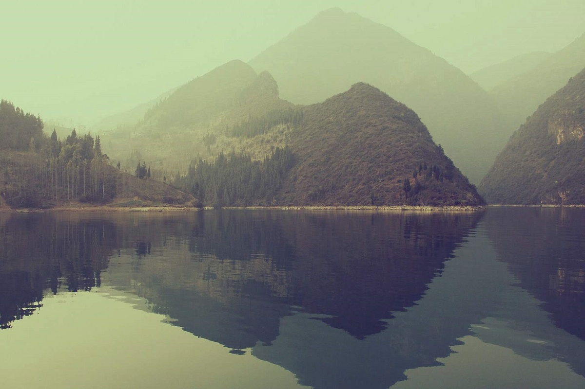
Mirror Lake. The mountains were covered with a rug of trees, green, yellow, scarlet and orange, but their bare tops were
scarfed and beribboned with snow. From carved rocky outcrops, waterfalls drifted like skeins of white lawn,
and in the fields we could see the amber glint of rivers and the occasional mirror-like flash of a mountain
lake.
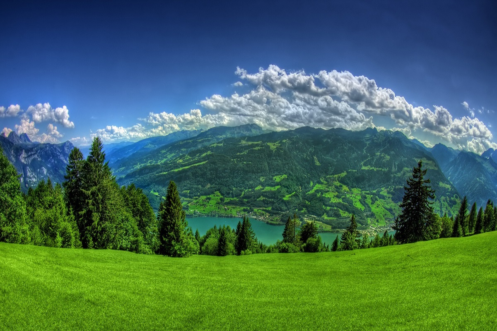
Green Valley. In this expanse of green there are more hues than anyone has ever named, yet here they are for any eye to see.
The land rolls as it always has, as if it feels that time and space are one thing, that it rolls through the
ages as much as to the horizon. Over it is laid a path, one that branches through the open landscape, and as
I begin to walk there is a frisson of joy for all the choices to come, each one of them laden with discoveries.
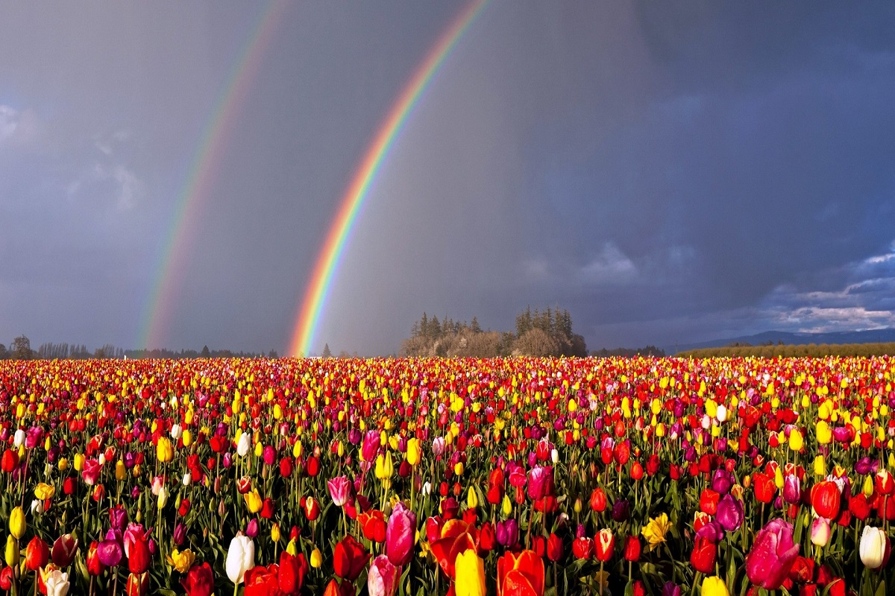
Tulips. What was only green a week before has become a garland of the most vibrant blooms. They are colours to weave
dreams from, as soft and gay as any silk. How they come from earth, sunshine and rain feels akin to magic,
even though the science is well known. The older I become, the more I see the miracle they are, better than
any picture or movie could be.
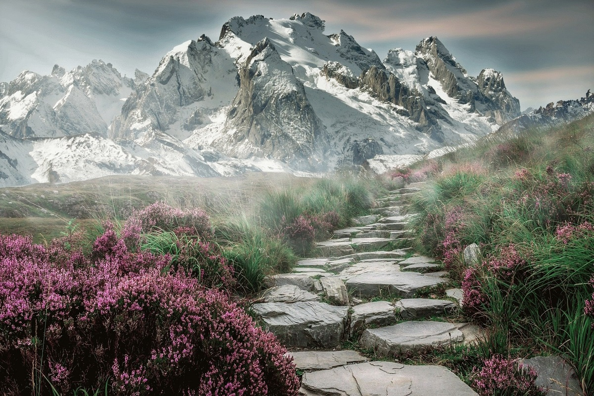
Mountains. If the earth had a pulse it rose through the mountains, creating their bold silhouette. To my eye, their peaks
are the green line of a doctor's graph. I saw those rocks at dawn, those slopes that give home to so much life,
a foundation for trees and shrubs, grass and ferns. With blue above and below, in the sky and lake, ever
lightening as the sun rose, I knew it would be a good day... I just knew.
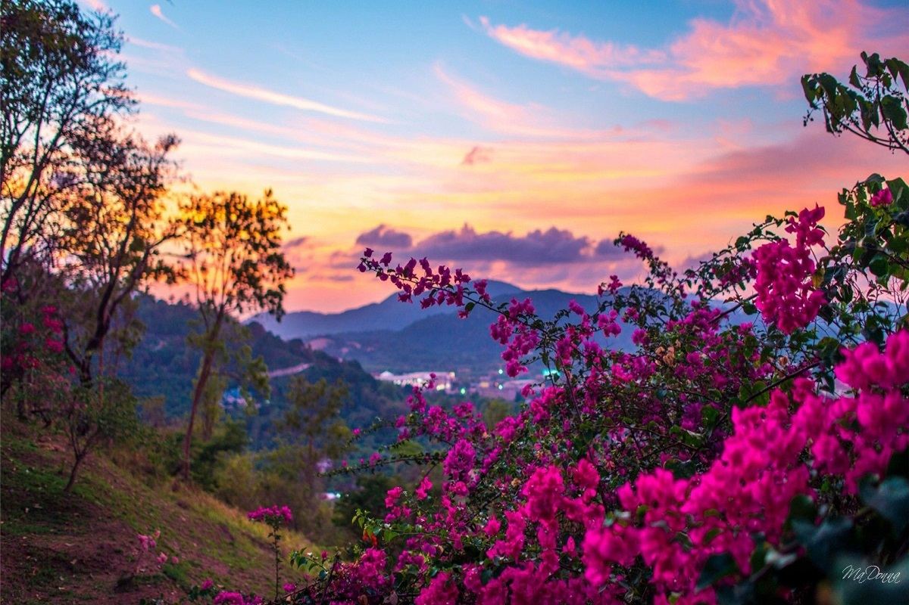
Summer Valley. The sunrise is the warmest hues of the rainbow, the colours that bring a gentle passion to the soul. It is the
calling of the skies to rise and be something great, a new person that is revealed to me daily as I work to
become my best self.
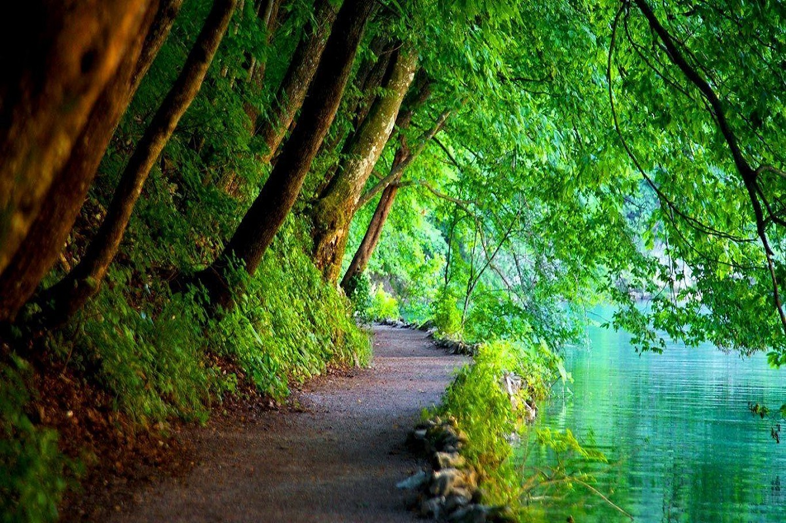
Green Road. Desolate country road, pot holes, dirt track, lined with hedges, tree lined, loose gravel, narrow, open road,
like a black ribbon over the highlands, disappearing into the horizon where earth meets big sky, endless river
of black, baked in the August sun, draped over the mountains like orange peel, sheer drop to one side.
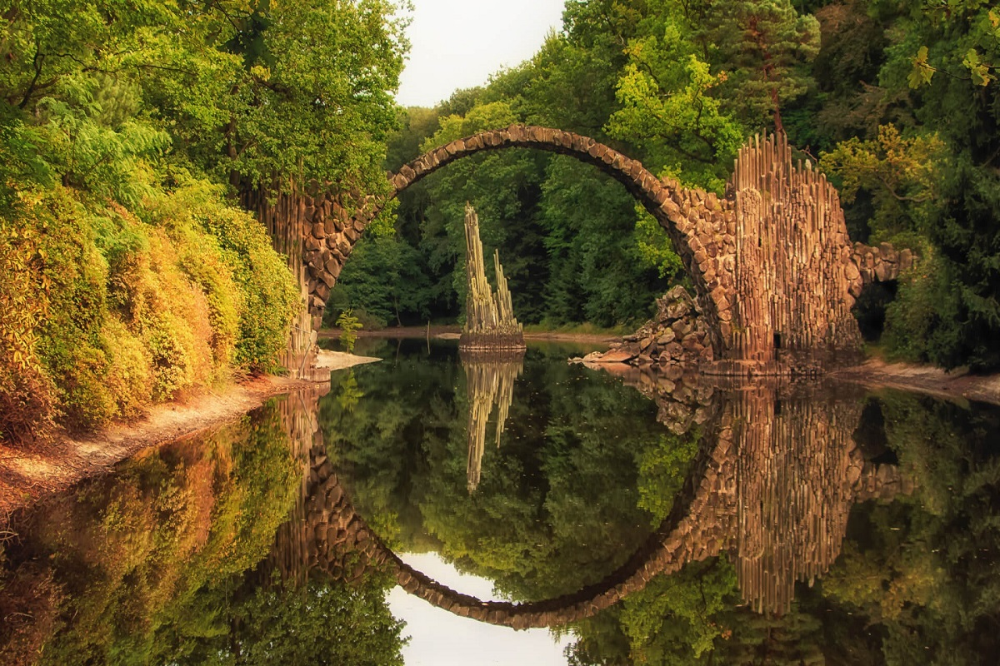
Stone Bridge. It arched elegantly over the clear blue river. At first glance, the river seemed serene and peaceful, but
underneath the surface were violent currents that would whisk away anyone who dared touch it. The stone bridge
was the only way to cross it. It had been built by the men of ancient times.